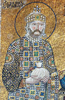

Kıyamete Doğru İlk Çatlak
1043 yılında, Doğu Roma İmparatoru Dokuzuncu Konstantinos (Monomakos), Fener Kilisesi’ne Mihail Kirilarios’u Başpatrik atadı.
Mihail Kirilarios, Konstantinopolis Ekümenik Patrikliğinin Hıristiyan âlemine öncülüğünün ateşli bir savunucusuydu. Kadim kanunları çiğneyerek kendinden menkul yetkiler edinen Papalıktan nefret ediyordu.
1049 yılında Papa seçilen Dokuzuncu Leo ise Batı Roma Kilisesi’nin bağımsızlığını pekiştirici bir dizi reform yapmaya kararlıydı. İleride “Gregoryen Reformları” diye anılacak bu süreçte, çevresine Yunanca İncil’e karşı Latince İncil’in bayraktarı, bilgin ve diplomat piskoposlar topladı. Bunlardan biri, en katı ama en yetkini Frank rahibi Humbert de Moyenmoutier’yi, 1051 yılında “Sicilya Başpiskoposu Kardinal Silva Candida” ad ve ünvanıyla donatarak danışmanı atadı.
Adının İtalyanca karşılığı Umberto di Silva Candida olarak tarihe geçen bu danışman, Hıristiyanlığın merkezinin Kutsal Roma Germen İmparatorluğu, yani Batı Roma olduğuna sarsılmaz bir inanç besliyordu.
Konstantinopolis Başpatriği Mihail Kirilarios, 1053 yılında Papa’ya Latin ritüellerin Hıristiyanlığın özüne aykırı olduğundan hareketle Roma Kilisesi’ni (dolayısıyla Papalık kurumunu) şiddetle eleştiren bir betiğ gönderdi. Libellus Contra Latinos (Latinlere muhalif kitapçık) adını taşıyan bu betiğe, Papa uzun ve yumuşak üsluplu bir mektupla yanıt verdi.
Ama asıl cevap, Kardinal Silva Candida tarafından yazılan Adversus Graecorum Calumnias (Yunan iftiralarına karşılık) başlıklı bildiriyle geldi. Ve bu bildiride, Roma Kilisesi’nin tüm Kiliselere üstünlüğü ile Papa’nın Hıristiyan âlemine hüküm yetkileri, ilk kez

Dokuzuncu Konstantinos (Monomakos)
“Konstantin” metni, yani Büyük Konstantin’in “sahte” vasiyetiyle gerekçelendirildi.
Tahmin edersiniz ki, kadim İmparator’un bizzat Hıristiyanlığın başkenti olsun diye kurduğu Konstantinopolis’teki ruhban sınıfı, Başpatrik Mihail Kirilarios önderliğinde öfkeden çılgına döndüler!
Ama Papalık da gözünü karartmıştı. Dokuzuncu Leo’nun reform projesinde salt Batı Roma’yı değil, Doğu Roma’yı da Latin Hıristiyanlığın egemenliğine almak hırsı vardı. Gerçekten de yayılıyordu Latin ritüel kiliseleri, Yunan ağırlıklı Doğu Roma topraklarında. Hatta Konstantinopolis’te bile...
Papalık, Greko Romen kültür coğrafyasına, Roma emperyalizmiyle hükmetmek çabasındaydı.
Konstantinopolis Başpatriği Mihail Kirilarios, tehlikeyi gayet iyi anlamıştı. Latin ritüeli izleyen kiliseleri kapattırdı.
Ne var ki İmparator Dokuzuncu Konstantin’in bambaşka dertleri vardı. Tahta çıktığından beri iki isyan bastırmış, Konstantinopolis’e kadar inen Rusları nihayet yenmişti; Selçukluların ilk saldırıları ve Ermenilerle uğraşıyor; bir de Batı Avrupa’yla “papaz olmak” istemiyordu!
1054 yılı başlarında kendi Başpatriği Kirilarios’a zılgıt çekti, Papa Dokuzuncu Leo’ya mektup yazarak İtalya’ya saldıran Normanlara karşı askerî yardım ve Grek ile Latin Kiliseleri arasında barış yapılmasını önerdi. Kuzeyden gelen inançsız barbarlara karşı oluşturduğu koalisyon güçleri yenilgiye uğrayan Papa, zor durumdaydı. Öneriyi ikiletmeyerek Konstantinopolis’e alelacele bir barış delegasyonu yolladı. Ruhban diplomatlardan oluşan delegasyonun başına, danışmanı Kardinal Silva Candida’yı “özel elçi” olarak atadı.
Papa Leo, Konstantinopolis’te Doğu ve Batı Kiliselerini barıştırmak için başlayan görüşmelerin tam tersine sonuçlandığını göremeden öldü.
İmparator Konstantin Monomakos tarafından çok iyi karşılanan Papalık elçileri, çok geçmeden Konstantinopolis Patrikhane temsilcileriyle kavgaya tutuştular. Kamuya açık yapılan sert tartışmalarda, birbirlerini dinden sapmakla itham ettiler. Taraflar arasındaki gerilim çığırından çıktı.
Latin Roma Kilisesi başmüzakerecisi Kardinal Silva Candida, 16 Temmuz 1054 günü Ayasofya’nın mihrabı üzerine bıraktığı bir fermanla, Konstantinopolis Başpatriği Mihail Kirilarios’u dini inkâr suçundan aforoz ve onunla birlikte Yunan ritüeli izleyen tüm Doğu Roma (Grek) Kiliselerini “kâfir” ilan etti.
Misilleme gecikmedi: Halkın ve Konstantinopolis ruhbanlarının desteğini arkasına alan Başpatrik Kirilarios, kentte bir isyan başlatarak Papalık delegasyonunu kaçmak zorunda bıraktı. 24 Temmuz 1054 günü topladığı Konsil’de (din kurultayı) Batı Romalı müzakereciler bir karşı fermanla aforoz edildi ve Ayasofya’nın mihrabına bırakılan Papalık fermanı törenle yakıldı.
Hıristiyan Kiliseyi ve doğal olarak müminler âlemini ikiye ayıran bu ilk deprem, tarihe “1054 Bölünmesi” olarak geçti.
Ne var ki çağdaş tarihçilere göre, 1054’teki karşılıklı aforozlaşma, Hıristiyan dinindeki bölünmenin kendisi değil, ilk çatlağıydı. Papa Leo’nun ölmüş ve onaylamamış olması, Başpatrik Kirilarios’un aforoz edildiği fermanı geçersiz kılıyordu.
Doğu ve Batı Roma Kiliseleri, gerek İncil’in meali, gerekse ritüel geleneklerinde hem dil hem de biçim açısından kesin çizgilerle ayrılmışlardı; ama gergin de olsa ilişkileri kopma noktasına henüz gelmemişti.
Zaten tarihte hiçbir bölünme, parçalanma, hatta en küçük rota değişikliği bile ansızın olmaz, tepeden inmez. Hıristiyan âleminin ilk mezhep ayrılığı, Katolik ve Ortodoks diye bölünmesinin dile yansıması bile yavaş gelişen bir süreçtir.
Bu süreç, ortak dilin din ortaklığındaki önemli görevini, hatta dinî cemaatleşmede birliği ya da ayrılığı sağlayan bir numaralı etken olduğunu gösteren ilk örnektir: “Hıristiyan” sözcüğü, Yunanca İsa demek olan “Hristos”tan türetilmiştir. Hıristiyan inancı ve öğretisini temsil eden Kilise de İznik Konsili’nin Yunanca yazılan fetvasında, “tek, aziz, evrensel ve havarilere ait” diye tanımlanmıştır. İşte bu tanımdaki “evrensel” sözcüğünün Yunancası katholike’dir.
Oysa Latin Roma Kilisesi, Yunanca fetvayı Latinceye çevirirken “evrensel” sözcüğünün karşılığına universalis yerine, Yunanca katholike aslını Latin alfabesiyle yazmıştır. Yıllar sonra bu kavramı dayanak alacak ve Grek Kilisesiyle yol ayrımında gerçek evrensel Kilise, dolayısıyla Hıristiyan âleminin liderlik makamı olduğu iddiasını, Katolik Roma Kilisesi tanımıyla pazarlayacaktır.
Sonuç olarak, Hıristiyan Kilisesi’ne dair tarihe “1054 Bölünmesi” diye geçen çatlak, Roma ve Konstantinopolis’in dinden çok dil temelinde ayrışmasıdır. Bu tarihten öteye Batı Roma Hıristiyanlığını Latin Kilise; Doğu Roma Hıristiyanlığını Greko Romen Kilise temsil edecektir.
İki Kilise’nin arasına kan ve kin sokarak Hıristiyanlığı bir daha bir araya gelemeyecek biçimde bölecek, Konstantinopolis’i işgal ve talanla tüm kutsal kalıtları Batı Avrupa’ya taşıyacak Haçlı Seferi’ne, 150 yıl kalmıştır...